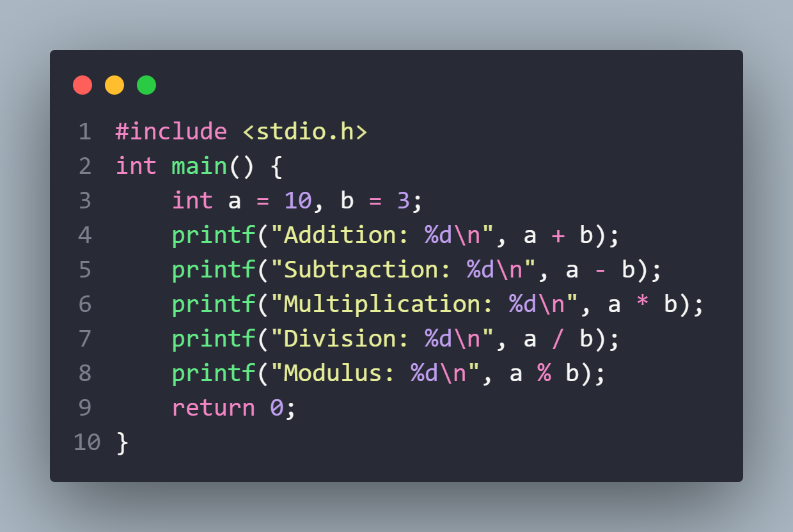
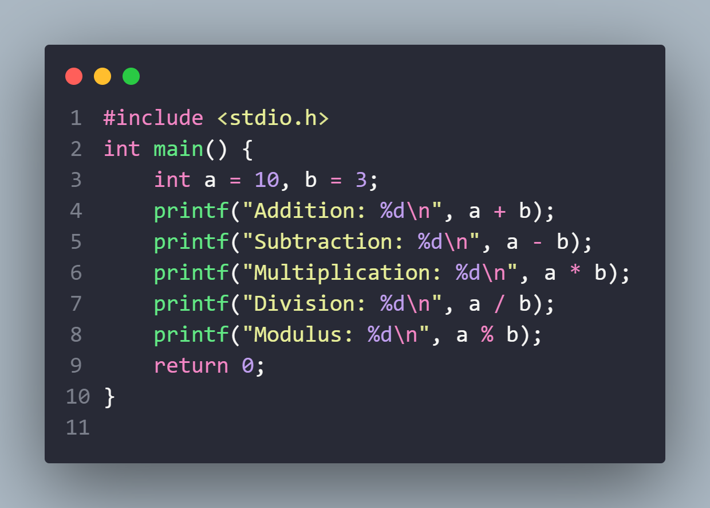
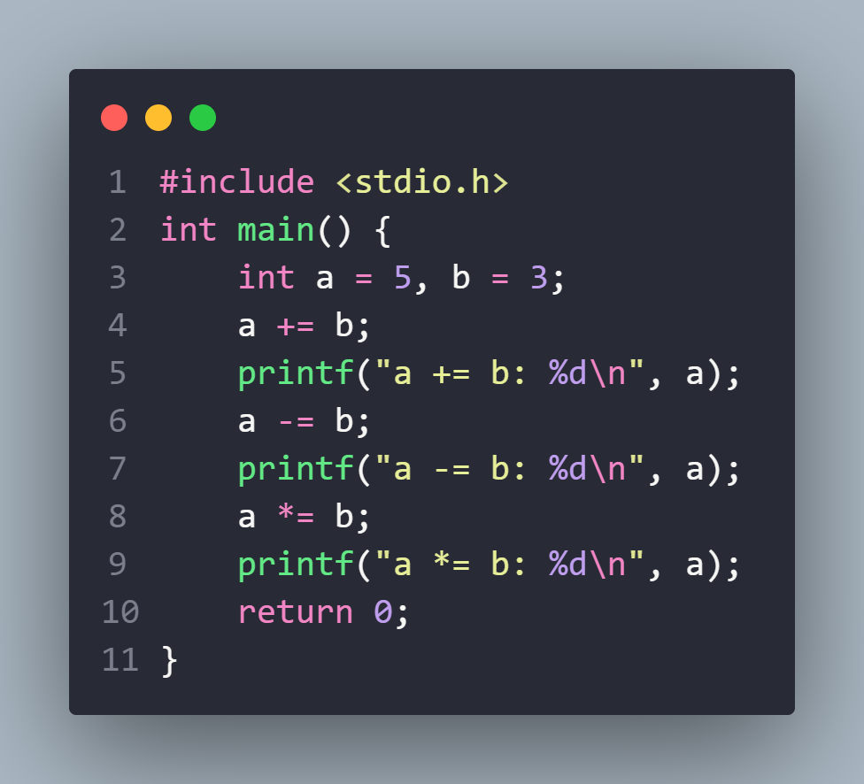
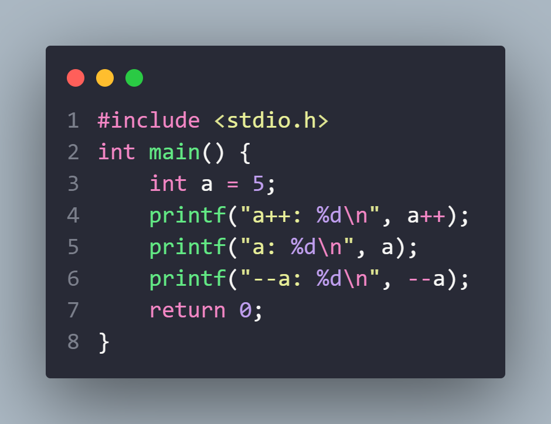

Data Types and Variables
ডেটাটাইপ: ডেটাটাইপ হলো কোনো ভ্যারিয়েবলের ধারণ করা ডেটার প্রকার। এটি আমাদের বলে যে একটি ভ্যারিয়েবলে কিস ধরনের ডেটা রাখা হবে, যেমন পূর্ণসংখ্যা, দশমিক সংখ্যা, স্ট্রিং ইত্যাদি।
ভ্যারিয়েবল: ভ্যারিয়েবল হলো একটি নাম বা স্থান যেখানে কোনো নির্দিষ্ট ডেটা সংরক্ষিত থাকে। এটি আমাদের কোডের মধ্যে ডেটা ব্যবহারের জন্য একটি স্থান নির্ধারণ করে।
প্রধান কিছু ডেটাটাইপ:
- ইন্টিজার (Integer): পূর্ণসংখ্যা যেমন 5, -3, 100।
- ফ্লোট (Float): দশমিক সংখ্যা যেমন 3.14, -0.5।
- স্ট্রিং (String): অক্ষর, শব্দ বা বাক্য যেমন "Hello", "Bangla"।
- বুলিয়ান (Boolean): সত্য বা মিথ্যা মান যেমন true, false।
ভ্যারিয়েবল উদাহরণ:
int age = 25; // ইন্টিজার টাইপ ভ্যারিয়েবল
float weight = 60.5; // ফ্লোট টাইপ ভ্যারিয়েবল
string name = "John"; // স্ট্রিং টাইপ ভ্যারিয়েবল
bool isStudent = true; // বুলিয়ান টাইপ ভ্যারিয়েবল
নামকরণের কনভেনশন:
ভ্যারিয়েবলের নাম অবশ্যই ইংরেজি অক্ষর (a-z, A-Z), সংখ্যা (0-9), অথবা আন্ডারস্কোর (_) থাকতে পারে।
ভ্যারিয়েবলের নাম অবশ্যই সংখ্যা দিয়ে শুরু করা যাবে না।
প্রতিটি শব্দের মধ্যে আন্ডারস্কোর (_) ব্যবহার করা হতে পারে, যেমন my_variable।
পাস্কাল কেস বা ক্যামেল কেস স্টাইল ব্যবহার করা যেতে পারে, যেমন myVariable বা MyVariable।
Practice


Operator
TutorialOperators: C প্রোগ্রামিং ভাষায় অপারেটরগুলি মূলত ব্যবহার করা হয় ডেটার মান পরিবর্তন করার জন্য বা গাণিতিক, তুলনা, যৌথ বা লজিক্যাল কাজ সম্পাদন করার জন্য। এখানে আমরা C ভাষায় বিভিন্ন ধরনের অপারেটর এবং তাদের ব্যবহারের কিছু উদাহরণ আলোচনা করবো।
অপারেটরের প্রকারভেদ:
১. আরিথমেটিক অপারেটর (Arithmetic Operators):
এগুলি গাণিতিক কাজ সম্পাদন করে। যেমন যোগ, বিয়োগ, গুণ, ভাগ ইত্যাদি

২. তুলনা অপারেটর (Relational Operators): এই অপারেটরগুলি দুইটি মান তুলনা করতে ব্যবহৃত হয় এবং ফলস্বরূপ একটি বুলিয়ান মান (সত্য/মিথ্যা) প্রদান করে।
৪. অ্যাসাইনমেন্ট অপারেটর (Assignment Operators): এই অপারেটরগুলি একটি মান একটি ভেরিয়েবলে সংরক্ষণ করতে ব্যবহৃত হয়।
ইনক্রিমেন্ট এবং ডিক্রিমেন্ট অপারেটর (Increment and Decrement Operators) এই অপারেটরগুলি একটি ভেরিয়েবলের মান বৃদ্ধি বা হ্রাস করতে ব্যবহৃত হয়।
MCQ
Input and Output
TutorialPractice
Problem 1. দুই সংখ্যার যোগফল বের করুন
দুটি সংখ্যা ইনপুট নিয়ে তাদের যোগফল প্রিন্ট করুন।
লম্বা এবং প্রস্থ ইনপুট নিয়ে ক্ষেত্রফল প্রিন্ট করুন।